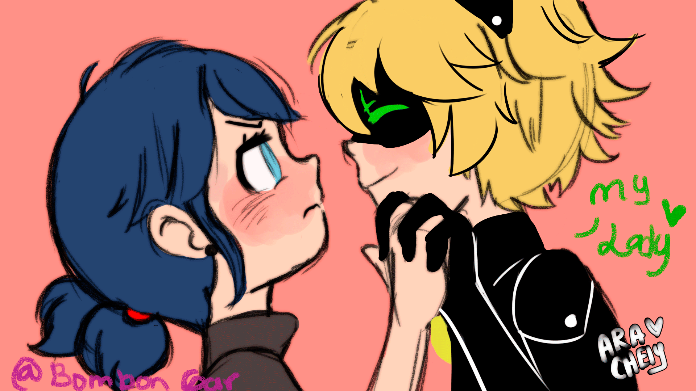

Marinette Dupain-Cheng / Ladybug: Es una joven estudiante en el Colegio Françoise-Dupont de París. Es una chica de personalidad alegre, altruista, y también algo torpe e insegura, que sueña con convertirse en diseñadora. Está enamorada de Adrien , aunque es incapaz de decírselo directamente. Su mejor amiga Alya a menudo trata de ayudar a Marinette a declararle su amor, solo para que termine en intentos fallidos. Elegida por Fu como la cuidadora del prodigio de la mariquita, puede transformarse en la superheroína Ladybug con la ayuda de su kwami ??Tikki, para defender París con su compañero de lucha contra el crimen, Chat Noir. Como Ladybug, consciente de la naturaleza de las situaciones que enfrenta, es más seria, decidida y responsable. Su herramienta de lucha contra el crimen es un yo-yo mágico. Con el que puede usar su poder especial Lucky Charm (Amuleto encantado en español) para crear un objeto clave y usarlo con otros objetos para derrotar a los villanos, después de lo cual ella convierte el objetccreado en energía que elimina el daño que causaron los villanos. Al tener el prodigio de la creación, es la única que puede capturar akumas, liberarlos del mal y devolver la normalidad.
